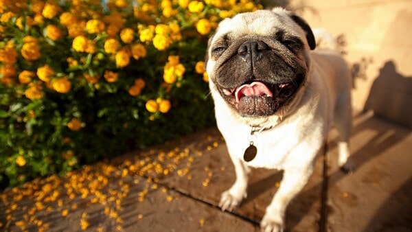

Top 6 giống chó cảnh đẹp và cách nuôi chó cảnh từng loại
1. Tổng hợp các loài chó cảnh
Dưới đây là tổng hợp chó cảnh loài đại diện ở thế giới cũng như ở Việt Nam. Chó cảnh loài đại diện là những chú chó nổi tiếng nhất và được nuôi nhiều nhất.
1.1: Chó pug
Nguồn gốc thật sự của những chú chó Pug “mặt xệ” hiện nay vẫn chưa được xác định. theo nhiều nguồn thông tin thì chú chó “mặt xệ” này đã xuất hiện từ thời nhà Hán - Trung Quốc vào khoảng những năm 200 TCN. Lúc bấy giờ, chó Pug được xếp vào dòng dõi quý tộc, được hưởng thụ cuộc sống xa hoa và những người nuôi chó Pug chủ yếu là quan lại, hoàng thân, quốc thích Trung Quốc.
Đặc điểm
Chú chó Pug có chiều cao từ 25 - 35 cm và có cân nặng khoảng 6 - 10kg. Sở hữu chiều cao lùn và thân hình to mập nên chó Pug có thân hình vuông. Lưng Pug thẳng, không lõm cũng không căng nên chúng có dáng đi khá oai vệ và vững chắc. Chó Pug có làn da khá mềm và mỗi khi vuốt ve chúng sẽ cảm thấy vô cùng dễ chịu.
Những chú chó Pug thuần chủng sẽ có đầu hình vòng cung khi nhìn ngang. Đặc biệt, chúng hầu như không có xương mũi, vì vậy chúng thường gặp khó khăn khi hít thở. Còn khi nhìn chính diện thì chó Pug có khuôn mặt to tròn với nhiều nếp nhăn xếp chồng lên nhau. Nếu những con chó Pug nào càng nhiều nếp nhăn càng được yêu thích.

Chó Pug sở hữu những đôi mắt to tròn và lồi, những chú chó Pug thuần chủng mắt sẽ có màu sẫm. Tai chúng luôn luôn cụp và to. Khuôn miệng chúng khá rộng, phần xương hàm to và chắc khỏe. Riêng hàm dưới sẽ hơi nhô so với hàm trên. ...
Trái với khuôn mặt dữ dằn và nghiêm túc, tính cách chó Pug lại rất hiền lành và hòa đồng. Hơn nữa, chúng cực kỳ thông minh, lanh lợi, trung thành và rất thân thiện với con người và những chú chó khác.
Cách nuôi
Chăm sóc sức khỏe
- Không gian chỗ ở thoáng mát, sạch sẽ và không bị ẩm ướt
- Chó Pug ham ăn nên rất dễ béo phì, bạn không nên cho chó ăn quá nhiều axit béo. Hơn nữa, chúng lại rất lười nên bạn cần thường xuyên dẫn chúng ra ngoài vận động và vận động, mỗi ngày nên cho chúng chạy nhảy khoảng 15 - 30 phút để có một sức khỏe tốt.
- Trên mặt chúng có rất nhiều nếp nhăn nên bạn phải thường xuyên vệ sinh sạch sẽ để tránh các bệnh nhiễm trùng cho da
- Chó Pug hay bị bệnh răng miệng nên bạn hãy đánh răng cho chúng khoảng 3 lần/tuần.
Chế độ dinh dưỡng
- 1 - 2 tháng tuổi: Nên cho chó Pug ăn các loại thức ăn băm nhuyễn và bổ sung thức ăn khô bán trên thị trường. Nên cho chó Pug ăn nhiều một chút, khoảng 4 - 5 bữa/ngày.
- 2 - 6 tháng tuổi: Giai đoạn này nên bổ sung cho chó Pug ăn những loại thức ăn giàu calo, protein,... và cho chó Pug tập ăn dần thịt, cá, tôm, rau củ với tần suất ăn là 3 - 4 bữa/ngày
- 6 tháng trở đi: Từ giai đoạn này nên rút bớt lại khẩu phần ăn của Pug và tăng cường dinh dưỡng trong khẩu phần ăn như các thực phẩm giàu protein, chất xơ và đạm cùng các loại rau xanh. Như vậy chó Pug sẽ tăng trưởng khỏe mạnh và phát triển thể lực.
1.2: Chó Beagle
Chó Beagle xuất hiện cách đây từ khoảng 2400 năm về trước và đó là kết quả của sự lai tạo giữa chó bản địa Anh và chó săn thỏ Talbot. Khoảng thế kỷ XIX, Beagle du nhập đến Anh Quốc và dần trở nên phổ biến khắp châu Âu.
Đặc điểm
Sở hữu một ngoại hình đáng yêu và thu hút nên chó Beagle được rất nhiều người yêu thích và muốn sở hữu chúng để là thú cưng. Chúng có chiều cao khoảng 33 - 41cm ở độ tuổi trưởng thành và cân nặng từ 10 - 11kg với chó đực, 9 - 10kg với chó cái. Chúng có thân hình vuông vắn, cứng cáp và nổi bật với bộ lông tam thể mượt mà cùng đôi tai cụp đặc trưng.
Chó Beagle là loài chó vui nhộn và năng động, trông chúng lúc nào cũng tràn đầy năng lực và có vẻ như chúng rất thích các hoạt động ngoài trời. Nhưng tuy nhiên chúng có bản tính săn mồi, có thể làm hại những vật nuôi khác như mèo, thỏ, hamster,...
Cách nuôi
Chăm sóc sức khỏe
- Chó Beagle là chú chó hiếu động và tràn đầy năng lượng nên chúng rất hay đi lang thang. Vì vậy bạn nên cẩn thận khi chú ta ra khỏi nhà và chó chúng dạo chơi, tốt nhất là nên xích chúng lại để kiểm soát dễ hơn.
- Vì sở hữu bộ lông ngắn nên chỉ thỉnh thoảng tắm cho chúng mà thôi. Khi tắm nên sử dụng nước ấm vừa, hãy loại bỏ toàn bộ lông rụng của chúng, sau đó làm sạch các nếp nhăn trên khuôn mặt.
- Đến bác sĩ thú ý và tiêm phòng định kỳ
Chế độ dinh dưỡng
- Trong khoản ăn uống thì chó Beagle lại cực kỳ dễ tính, chúng không quá kén ăn và có thể ăn mọi thứ. Bạn có thể cho chúng ăn các món ăn đóng gói, đóng hộp sẵn hoặc tự nấu cho chúng.
1.3: Chó Poodle
Chó Poodle được biết đến ở Tây Âu vào khoảng 400 năm trước và chúng chính là hậu duệ của các giống chó như French Water Dog, Hungarian Water Hound và Barbet. Ngày nay, con người đã lai tạo giống chó săn vịt này thành một hình tượng quý tộc và xinh xắn, trở thành chú chó được nhiều người yêu thích.

Đặc điểm
Những chú chó Poodle luôn khiến người khác đổ gục bởi vẻ ngoài xinh xắn và đáng yêu của mình. Nổi bật hơn hết là bộ lông xoăn đặc trưng với các màu như nâu đỏ, trắng, đen, vàng mơ, kem, xám, trắng, socola.
Về tính cách thì hầu hết nhà Poodle đều là những chú chó thân thiện, nghịch ngợm và thông minh. Đặc biệt, chúng học rất nhanh và khả năng học hỏi của chúng rất tốt.
Cách nuôi
Chăm sóc sức khỏe cho chó Poodle
Chó Poodle không chịu được khí hậu quá nóng hay quá lạnh. Vì vậy một nơi ở sạch sẽ, rộng rãi và thoáng mát là điều kiện tốt về nơi ở cho chúng. Vào mùa đông bạn nên hạn chế dắt Poodle đi dạo vì thời tiết mùa đông ở ngoài khá lạnh, chúng có bộ lông dày và xù nhưng khả năng giữ ấm cơ thể lại rất kém.
Chó Poodle là loài chó thích vận động, chạy nhảy nên mỗi ngày bạn nên dắt chúng đi dạo và cho chúng giao tiếp với những chú chó khác.
Poodle dễ bị cảm lạnh nên bạn dùng nước ấm để tắm cho chúng
Sở hữu bộ lông dày nên phải tắm cho Poodle thường xuyên, khoảng 2 -3 lần một tuần.
Poodle mọc lông rất nhanh nên cứ 1 tháng bạn tỉa lông cho Poodle 1 lần
Chế độ dinh dưỡng
Chế độ dinh dưỡng của Poodle thay đổi theo từng độ tuổi của chúng. Bạn có thể học nấu thức ăn cho chó cảnh Poodle hoặc mua thức ăn ở những địa chỉ uy tín, tin cậy.
Từ 1 - 2 tháng tuổi: Ở độ tuổi này bạn nên cho chúng ăn các loại thức ăn mềm như cháo xay nhuyễn, sữa ấm và nhớ chia nhỏ thành 4 - 5 bữa ăn
Từ 3 - 6 tháng tuổi: Poodle giai đoạn này đã cứng cáp hơn rồi nên bạn có thể cho chúng ăn cháo gà, cháo bò,... và uống nhiều sữa.
Từ 7 tháng tuổi trở lên: Bổ sung nhiều thức ăn nhiều canxi, đạm, protein và rau củ. Bạn nên cho Poodle ăn 2 - 3 bữa 1 ngày, thực đơn nên thay đổi để Poodle không thấy nhàm chán.
1.4: Chó Chihuahua
Chihuahua là chú chó nhỏ nhất trong mọi loài chó trên thế giới và cũng là giống chó lâu đời nhất ở châu Mỹ. Chú chó này có nguồn gốc từ Mexico nhưng lại được cả thế giới biết đến nhờ Trung Quốc. Tên của chúng được lấy từ tên một bang của Mexico, bang Chihuahuan, là nơi mà chú chó được tìm thấy.
Đặc điểm
Chó Chihuahua là giống chó nhỏ con có đầu tròn và mõm ngắn. Đôi mắt chúng to, tròn và lồi. Đôi tai của Chihuahua to đùng luôn trong trạng thái vểnh lên.
Chihuahua là giống chó nhỏ nhất thế giới hiện nay. Tuổi thọ của chúng khá cao, từ 10 - 18 năm tùy vào khí hậu và môi trường chúng sống. Ví dụ như nếu sống ở châu Âu và Mỹ thì tuổi thọ từ 15 - 18 năm, còn sống tại quê hương Mexico của chúng thì tuổi thọ từ 13 - 16 năm và ở Việt Nam thì Chihuahua có tuổi thọ từ 10 - 15 năm.
Cách nuôi
Chăm sóc cơ thể
- Những chú chó Chihuahua sở hữu bộ lông mượt tự nhiên nên chúng không cần tắm nhiều, bạn chỉ cần tắm cho chúng 1 tuần/lần là đủ. Khi tắm cho chúng bạn nên nhớ vệ sinh tai, mắt thật kỹ. Hơn nữa, Chihuahua rất hay liếm mặt chủ nên bạn cũng cần vệ sinh răng miệng cho chúng thường xuyên để chúng có hơi thở thơm tho.
- Đến bác sĩ thú ý để tiêm phòng định kỳ và nhớ tiêm vacxin để phòng tránh các bệnh nguy hiểm.
- Chỗ ở của chúng phải thật thoáng và sạch sẽ, những ngày thời tiết mùa đông nên giữ ấm cho chúng vì chúng rất sợ lạnh.
- Bạn nên cho chúng vận động thường xuyên và vận động mỗi ngày khoảng 15 phút để chúng được tự do đi lại, giao tiếp với thế giới bên ngoài.
Chế độ dinh dưỡng
- Cách nuôi chó Chihuahua trong việc bảo đảm chế độ dinh dưỡng cho chúng cũng rất quan trọng, điều này phù hợp vào từng giai đoạn phát triển của chúng:
- Sơ sinh -> 3 tháng tuổi: Thức ăn cho chó cảnh Chihuahua giai đoạn này chủ yếu là thức ăn dạng mềm, bạn có thể cho chúng ăn cháo gà, bò xay nhuyễn và ăn 1 ngày 4 bữa.
- 3 - 6 tháng tuổi: Khi Chihuahua đã lớn hơn thì bạn có thể cho chúng ăn những thức ăn giàu đạm, canxi và protein như tôm, thịt, trứng và các loại rau củ. Hãy chế biến thành các món ăn dạng mềm và nấu chín để đảm bảo sức khỏe của chúng.
- từ 6 tháng tuổi trở đi: Đây là giai đoạn cần bổ sung nhiều dinh dưỡng để Chihuahua có thể phát triển tốt nhất. 2 sản phẩm cung cấp nhiều dưỡng chất mà bạn nên cho chúng ăn là trái cây và sữa bột
1.5: Chó Bully
Chó Bully xuất hiện từ những năm 1995 và là hậu duệ của chó Pitbull nhưng chúng sở hữu vẻ ngoài đô hơn và cơ bắp hơn. Đây là giống chó cảnh đang được yêu thích tại Việt Nam.
Đặc điểm
Chó Bully có ngoại hình săn chắc cùng những khối cơ bắp vạm vỡ và nở nang khiến khuôn mặt chúng có phần hơi dữ dằn. Bully có một chiếc đầu to trông rất hầm hố và đồ sộ. Vầng trán chúng rộng chứng tỏ chú chó này rất thông minh. Hai mắt của chúng cách xa nhau, mõm chúng tương đối rộng cùng với hàm răng sắc nhọn. Nhờ vào hàm răng khỏe mà chúng nhai rất tốt.
Đôi chân của Bully thẳng và khỏe. Hai chân sau có xu hướng chếch ra ngoài nên khiến dáng đi chúng hơi khệnh khạng.
Bộ lông của chúng phổ biến với màu đơn, khoang và màu đốm. Có những chú Bully sở hữu cả 3 màu khác biệt và giá của chúng không hề rẻ.
Cách nuôi
- Chăm sóc sức khỏe
- Thường xuyên cho Bully vận động để có một thân hình đẹp
- Chế độ dinh dưỡng
- Khẩu phần ăn của chó Bully đòi hỏi có độ đạm cao như các loại thịt, lòng trắng trứng, gan lợn, cổ gà, phổi bò, nội tạng động vật, sữa, trứng vịt lộn,... Bên cạnh đó, nên kết hợp thức ăn giàu đạm với những thức ăn chứa tinh bột cao.
1.6: Chó Corgi
Corgi là chú chó đến từ Anh quốc và đây là giống chó lùn vô cùng nổi tiếng với đôi chân ngắn ngủn.
Đặc điểm
Giống chó Corgi có đặc điểm chung là thân hình dài và 4 chân ngắn, những chú chó nào có thân hình càng dài thì càng đẹp. Chó Corgi có đôi tai hình tam giác dựng thẳng rất đáng yêu. Tai và mặt chúng có tỷ lệ hết sức cân đối, mắt to tròn, miệng và khuôn hàm nhỏ cực kỳ sắc nhọn. Nhìn tổng thể chú ta rất giống loài cáo và Corgi còn được gọi với cái tên là Foxy Dog.
Corgi có bộ lông ngắn, mỏng và cực kỳ mềm mượt sẽ giúp cho Corgi giữ ấm cơ thể khi thời tiết lạnh.

Cách nuôi
Chăm sóc sức khỏe
- Nhiệt độ môi trường sống lý tưởng của Corgi là 25 - 30 độ C.
- Hãy cho Corgi được chạy nhảy mỗi ngày vì chúng luôn đòi hỏi được ra ngoài vận động
Chế độ dinh dưỡng
- 1 - 2 tháng tuổi: Giai đoạn sơ sinh nên chó Corgi ăn cháo thịt nạc hoặc cơm nhão say nhuyễn. Ngoài ra nên bổ sung sữa ấm cho chúng. Corgi cần được ăn nhiều bữa trong ngày, khoảng 4 - 5 bữa.
- 3 - 6 tháng tuổi: Bổ sung thêm thịt, cá, tôm, trứng, rau củ, ngũ cốc vào khẩu phần ăn của chúng. Nhưng vẫn nên xay nhuyễn chúng rồi trộn vào cơm. Giai đoạn này Corgi chỉ cần ăn 3 - 4 bữa/ngày
- 6 tháng tuổi trở lên: Bổ sung thêm nhiều protein và canxi để cơ xương phát triển chắc khỏe. Cùng với đó là các chất xơ, vitamin trong các loại rau, củ. Giai đoạn này nên cho Corgi ăn 2-3 bữa/ngày.